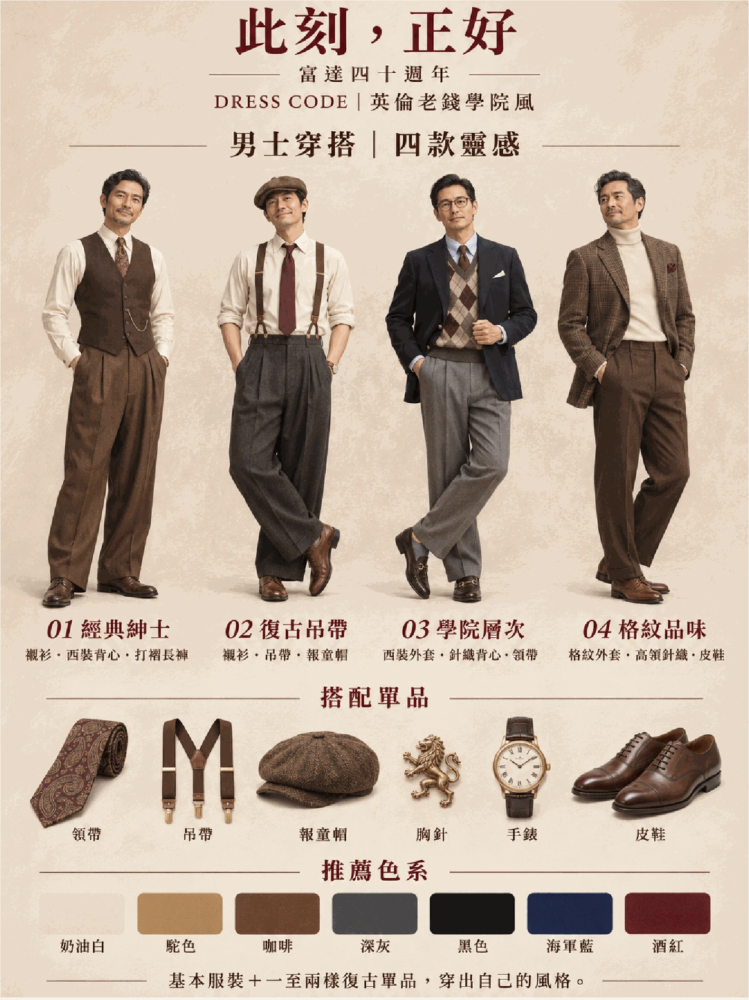
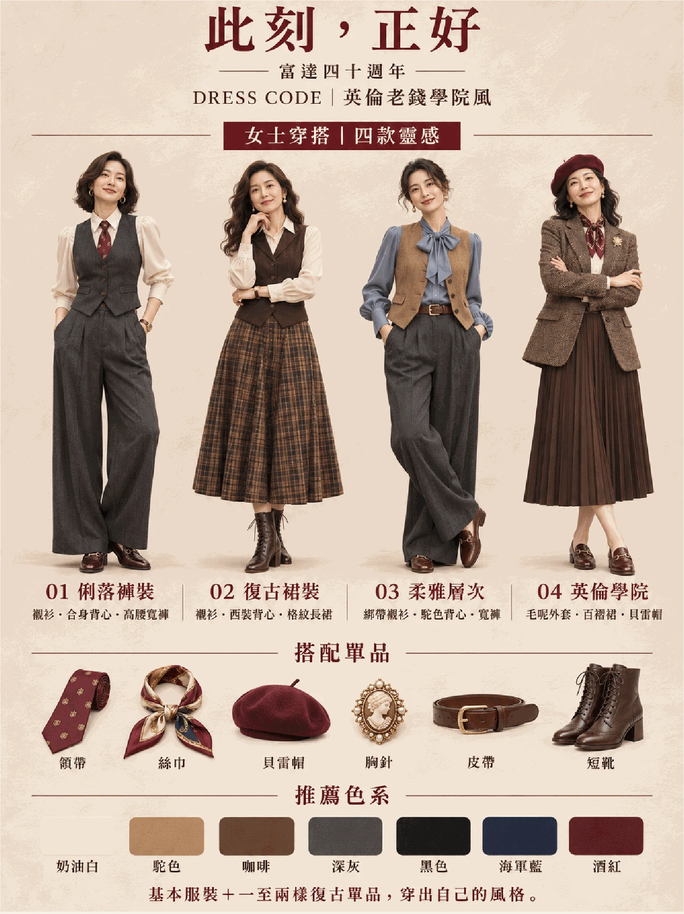
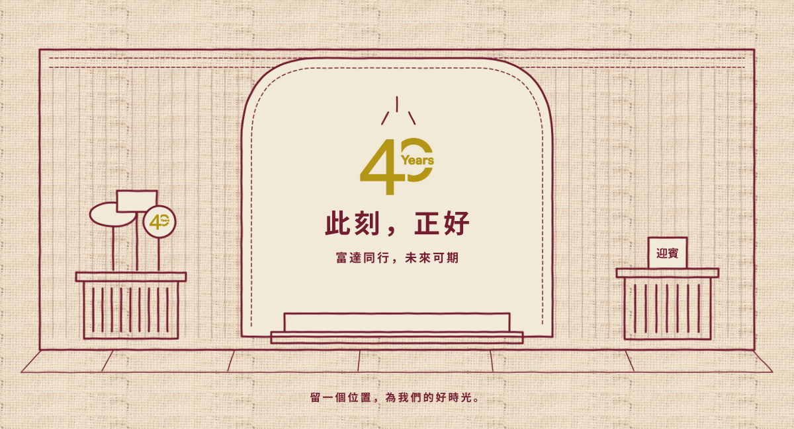
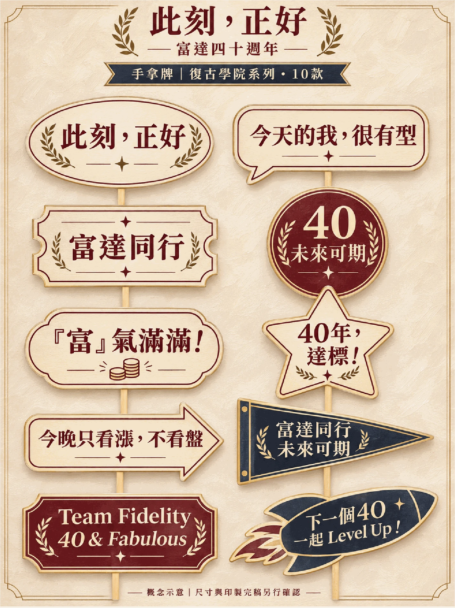
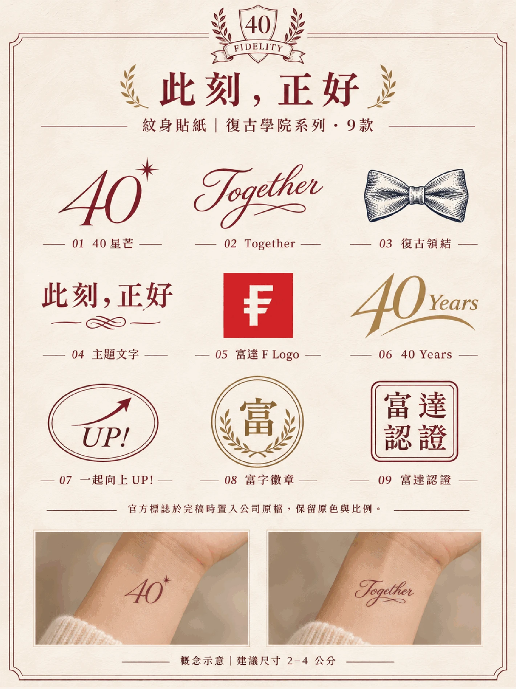

202701.08星期五 · 18:00 入席
Here's to us.
此刻相聚
把這個晚上，
留給我們。
四十年的故事，因為每一位同行的你而豐富。
有人相伴多年，有人剛剛加入；
不同的起點，讓我們在富達相遇。
此刻，正好讓我們相聚，
為一起走過的日子舉杯。
晚宴資訊
2027 年 1 月 8 日
星期五 · 18:00 入席 · 19:00 開場
南港六福萬怡酒店
9F 水晶雲風光
飯店交通圖敬請期待
晚宴節奏
今晚的好時光
A lovely evening.
迎賓與入席
開場準備
主題開場
貴賓致詞與舉杯
用餐與樂團演出
幸運抽獎
桌間猜題互動
抽獎與造型揭曉
回顧影片・美好收尾
18:00 入席、19:00 開場已確認；其餘為建議排程，依最終公告為準。
Dress code
英倫老錢學院風
一件背心、一條領帶，或一抹酒紅。
用一至兩樣復古單品，穿出自己的風格。
襯衫、西裝褲、過膝裙，搭配毛呢、細針織與皮革。
整潔、合身、方便走動，不需整套購買。
奶油白駝色咖啡深灰黑色海軍藍酒紅




避免運動套裝、破損牛仔褲與拖鞋。
今晚有型 · 服裝造型票選
讓你的風格，
成為今晚的亮點。
盛裝出席，自由參與服裝造型票選。
每位同仁一票，選出你最喜歡的造型。
票選方式、獎項與名額待最終公告。
迎賓佈置與互動示意
相聚的模樣
Make a memory.



以上為企劃概念示意，實際佈置與製作細節待確認。